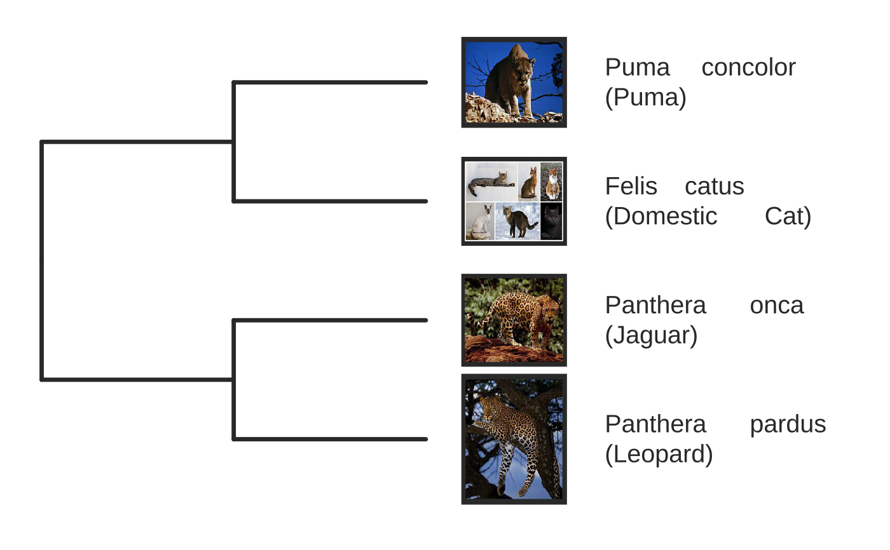
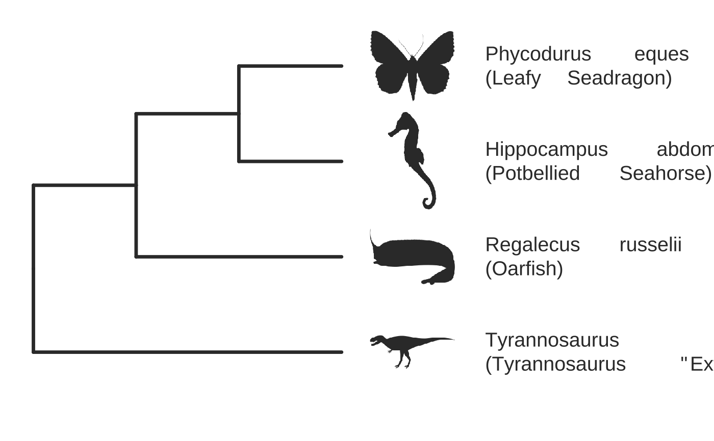
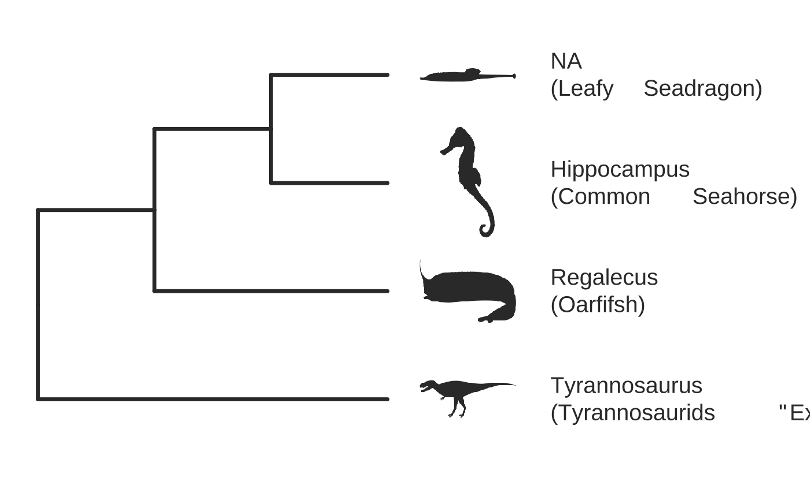

A relatively simple function for generating presentation-ready phylogenies, given a set of common or scientific names. It works best for a few species, since the goal is to make a phylogeny for pedagogical purposes, so the focus is on details, not quantity.
showPhylo(
speciesNames,
nameType,
dateTree = FALSE,
labelType = "b",
labelOffset = 0.45,
aspectRatio = 1,
pic = "wiki",
dotsConnectText = FALSE,
picSize = 1,
picSaveDir,
optPicWidth = 200,
picBorderWidth = 10,
picBorderCol = "#363636",
openDir = FALSE,
xAxisPad = 0.2,
xTitlePad = 20,
numXlabs = 8,
textScalar = 1,
xTitleScalar = 1,
phyloThickness = 1.2,
phyloCol = "#363636",
textCol = "#363636",
plotMar = c(t = 0.02, r = 0.5, b = 0.02, l = 0.02),
clearCache = FALSE,
quiet = TRUE,
silent = FALSE,
...
)a name or vector of common or scientific names of organisms of interest (in quotes)
what type of name are you supplying? Either "sci" or "common"
try to scale the tree to estimated divergence times? Uses datelife_search with summary_format="phylo_median." default= F, because datelife seems to be somewhat broken
which names to label tree "leaves"? Options= "s" for scientific, "c" for common, and "b" for both (default="b")
how far from the tree tips do you want to put labels? default=0.3 (in proportion of x-axis units)
doesn't actually work yet; the output phylogeny is always square for the moment
what type of species image do you want to plot? options="wiki" (Wikipedia page profile image), "phylopic" (species' silhouette from the PhyloPic repository), "cust" (custom images: must be named .jpg or .png with names matching speciesNames in the picSaveDir folder), or "none"
do you want a dotted line to go from the text to the labels? default=FALSE
how big to scale images, where 1=100%; .5=50%; default=1
location for saving downloaded images; default=fs::path(tempdir(),"showPhylo")
picture width in pixels for optimized versions of images saved if using pic="cust"; default= 200
for pic="wiki" or "cust," what size border would you like around your image (as a %); default=10
color of image border; default="# 363636" (a dark, near-black color)
for pic="wiki" or "cust," do you want to open the picSaveDir after processing files? default=FALSE
spacing between the phylogeny and the x-axis (scale is 1 is the distance between two sister taxa); default=.2
spacing between x-axis title and x numbers; default=20
the number of year markers on the x-axis; default=8
multiplier of text size for labels and axis numbers; default=1
multiplier of x-axis title size; default=1
how thick to make the phylogeny lines; default=1.2
color of the phylogeny lines; default= "# 363636"
color of the axis and tip labels; default= "# 363636"
margins around the plot area in proportional screen width units; note the right margin is much wider to make room for tip labels; default=c(t=.02,r=.4,b=.02,l=.02) for top, right, bottom, left
delete cached images and taxonomic names? Passed to getPhyloNames, getWikiPics, and also applies to optimized custom images; default=FALSE
suppress verbose feedback from the taxize package? Passed to getPhyloNames and get WikiPic helper functions. Default=TRUE
suppress all console output? (Mainly for R documentation); Default=FALSE
pass other parameters to ggtree (not very compatible right now)
use use source trees even if they only match some of the desired taxa; affects the partial paramter in datelife_search; default= TRUE
You have the ability to look up matching common or scientific names for taxa, plot them in an evolutionary tree based on the Open Tree of Life Project, date taxa using datelife_search, if data are available, plot a phylopic (i.e. a silhouette of the organism) if available, pull down the profile image from each organism's Wikipedia page, or provide a custom image, and label the pictures with the scientific and common names. The result is a customizable ggplot2 object. This is a convenience wrapper that merges functionality from ggplot2, ggtree, datelife, rotl,and taxize, among other packages.
The impetus for this package was the need to make a figure showing that the many animals we call "panthers" are actually really distantly related cat species. Our genetic rescue lesson, sponsored by Dr. Sarah Fitzpatrick's lab, uses the example of the Florida panther as a charismatic application of her research (which mostly uses guppies as a model for understanding how gene flow can save small, highly inbred populations from extinction).
{require(ggplot2);require(ggtree)}
#> Loading required package: ggtree
#> ggtree v3.4.1 For help: https://yulab-smu.top/treedata-book/
#>
#> If you use the ggtree package suite in published research, please cite
#> the appropriate paper(s):
#>
#> Guangchuang Yu, David Smith, Huachen Zhu, Yi Guan, Tommy Tsan-Yuk Lam.
#> ggtree: an R package for visualization and annotation of phylogenetic
#> trees with their covariates and other associated data. Methods in
#> Ecology and Evolution. 2017, 8(1):28-36. doi:10.1111/2041-210X.12628
#>
#> LG Wang, TTY Lam, S Xu, Z Dai, L Zhou, T Feng, P Guo, CW Dunn, BR
#> Jones, T Bradley, H Zhu, Y Guan, Y Jiang, G Yu. treeio: an R package
#> for phylogenetic tree input and output with richly annotated and
#> associated data. Molecular Biology and Evolution. 2020, 37(2):599-603.
#> doi: 10.1093/molbev/msz240
#>
#> G Yu. Data Integration, Manipulation and Visualization of Phylogenetic
#> Trees (1st ed.). Chapman and Hall/CRC. 2022. ISBN: 9781032233574
# declare some species common names
speciesNames <- c("puma","leopard","jaguar","domestic cat")
# Make a dated phylogeny with them (by default, median divergence times are estimated
# using the datelife package and images are added from Wikipedia)
# *Note* I'm using silent=TRUE to suppress all output to the console for this document;
# You will usually want to leave silent=FALSE (default) to see what's happening
# and diagnose problems. There are a lot of steps happening behind the scenes
showPhylo(speciesNames,"c",silent=TRUE)

# If a particular combination of organisms lacks divergence time data
# (especially extinct species), causing an error (e.g. this)
if (FALSE) {
showPhylo(c("potbellied seahorse","leafy seadragon",
"oarfish","Tyrannosaurus"),"common",silent=TRUE)
}
# you can possibly still produce an undated phylogeny (cladogram) using the open
# tree of life data; also modified plot margin to have more space for taxa labels
showPhylo(c("potbellied seahorse","leafy seadragon",
"oarfish","Tyrannosaurus"),"c",dateTree=FALSE,picSize=.8,silent=TRUE)
#> Warning: Double check output. You've got some matching scientific and common names. Did you supply the correct nameType?
# Instead of Wikipedia images for each species, we can try to find a phylopic (silhouette)
showPhylo(c("potbellied seahorse","leafy seadragon","oarfish",
"Tyrannosaurus"),"c",dateTree=FALSE,pic="phylopic",silent=TRUE)
#> Warning: Double check output. You've got some matching scientific and common names. Did you supply the correct nameType?

# In the case above, the butterfly was the wrong image, so we could try searching using the genus,
# (note: change nameType to "scientific");
showPhylo(c("Hippocampus","phycodurus","Regalecus","Tyrannosaurus"),
"scientific",dateTree=FALSE,pic="p",silent=TRUE)

# Not great, but phylopic is open source,
# so you can upload your own silhouettes
# If you have a ton of species, you can just say no pics
speciesNames<-c("rock hyrax","Hippopotamus","Eastern gray squirrel","Asian elephant",
"African elephant","groundhog","meerkat","wolverine")
showPhylo(speciesNames,"c",pic="n",dateTree=FALSE,silent=TRUE)
#> Warning: Neosciurus carolinensis are not matched
#> Error in showPhylo_backend(speciesNames = speciesNames, nameType = "c", dateTree = FALSE, pic = "n", silent = TRUE):
#> *Some species records not matched. Try changing your search terms.
# Doesn't look great, so we can connect the tree tips with the text
# and make the tree blue (why not?); Also, let's just show common names,
# and add more space in the right margin for all the text
showPhylo(speciesNames,"c",pic="n",dateTree=FALSE,phyloCol="royalblue1",
labelType="c",plotMar=c(r=".6"),silent=TRUE)
#> Warning: Neosciurus carolinensis are not matched
#> Error in showPhylo_backend(speciesNames = speciesNames, nameType = "c", dateTree = FALSE, labelType = "c", pic = "n", phyloCol = "royalblue1", plotMar = c(r = ".6"), silent = TRUE):
#> *Some species records not matched. Try changing your search terms.
# We could also shorten the gap between the tree and the text, add connecting dots,
# and increase text size
g<-showPhylo(speciesNames,"c",pic="n",dateTree=FALSE,phyloCol="royalblue1",dotsConnectText=TRUE,
labelType="c",labelOffset=.2,textScalar=1.2 ,silent=TRUE)
#> Warning: Neosciurus carolinensis are not matched
#> Error in showPhylo_backend(speciesNames = speciesNames, nameType = "c", dateTree = FALSE, labelType = "c", labelOffset = 0.2, pic = "n", dotsConnectText = TRUE, textScalar = 1.2, phyloCol = "royalblue1", silent = TRUE):
#> *Some species records not matched. Try changing your search terms.
# once we're satisfied with the tree, we can edit it like any other ggplot
g2<-g+labs(title="Phylogeny showing how weird rock hyraxes are:",
subtitle="They look like groundhogs, but are much closer related to elephants")+
theme(plot.title=element_text(size=18) )
#> Error in eval(expr, envir, enclos): object 'g' not found
# we can also use ggtree functions to do all sorts of stuff like highlight our key species
# (you can figure out which node that is here with g2$data)
g2+geom_highlight(mapping=aes(subset=node==6),fill="salmon")
#> Error in eval(expr, envir, enclos): object 'g2' not found
# OK, let's simplify it, add divergence time and get some pics back; also reduce pic size
# and space between pic and text and only print 7 breaks in the x-scale
speciesNames <- speciesNames[c(1,3,5,6,7)]
g3<-showPhylo(speciesNames, "c" ,silent=TRUE,picSize=.5,labelOffset=0.3,
numXlabs=7)
#> Warning: Neosciurus carolinensis are not matched
#> Error in showPhylo_backend(speciesNames = speciesNames, nameType = "c", labelOffset = 0.3, picSize = 0.5, numXlabs = 7, silent = TRUE):
#> *Some species records not matched. Try changing your search terms.
# Last tweaks: let's highlight the hyrax branch and add our titles
g3+geom_highlight(mapping=aes(subset=node==4),fill="salmon")+
labs(title="Phylogeny showing how weird rock hyraxes are:",
subtitle="They look like groundhogs, but are much closer related to elephants")+
theme(plot.title=element_text(size=18),plot.subtitle=element_text(size=14))
#> Error in eval(expr, envir, enclos): object 'g3' not found
# to get the right output dimensions, you may need to play around with setting height & width
# e.g. ggsave("hyrax.jpeg",height=3,width=3)